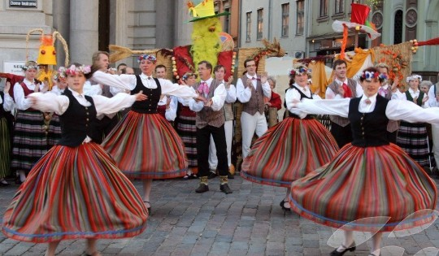
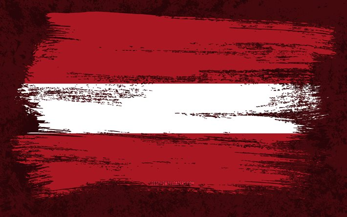
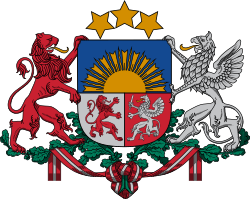
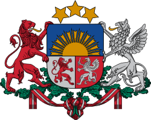
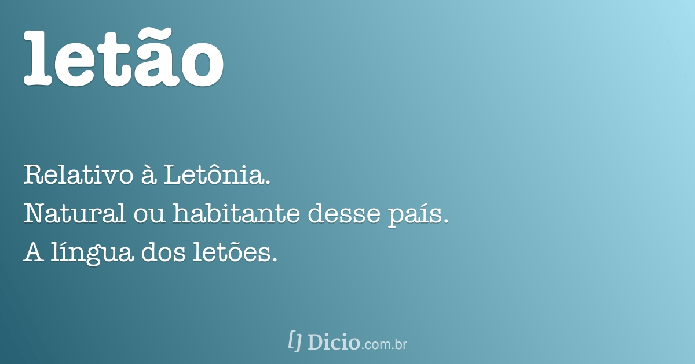
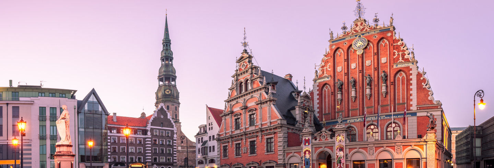
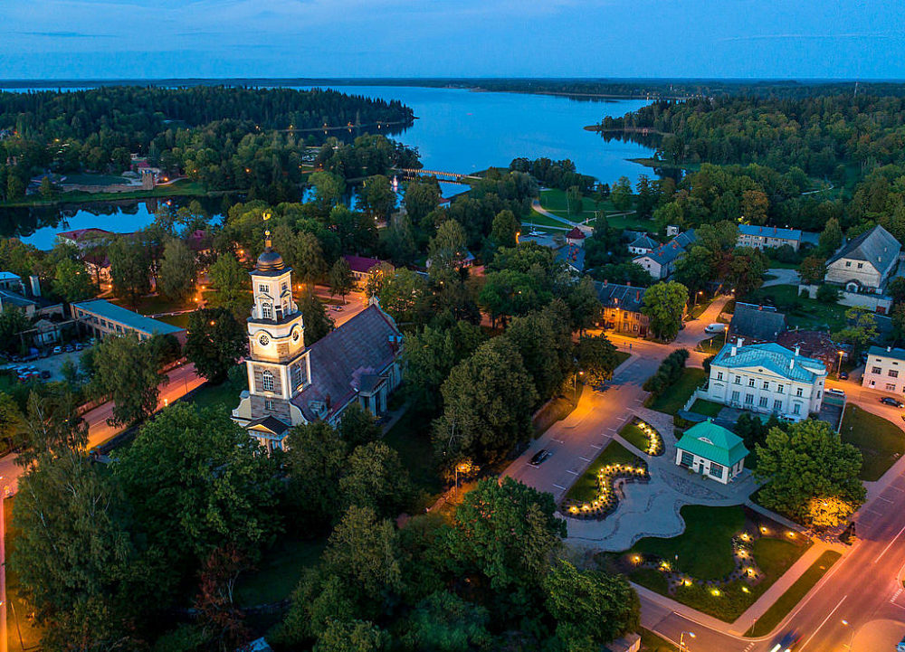
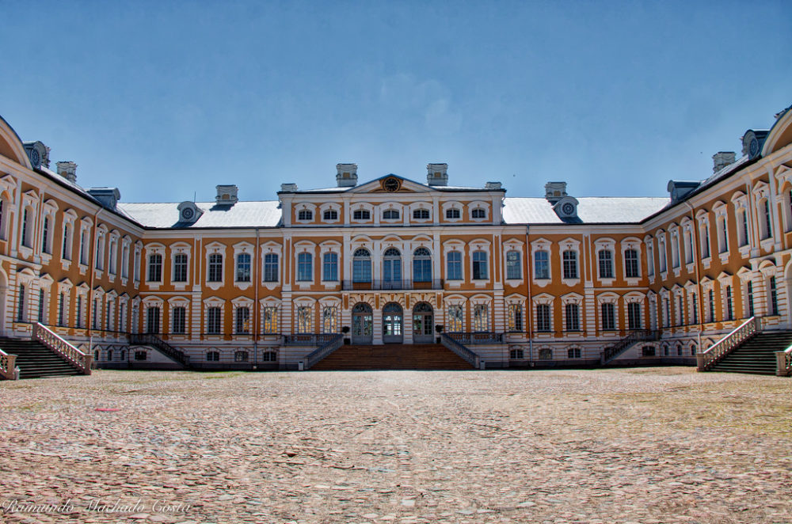

Desenvolvido por: Nuno Moura, Nº100519, Turma SI19

Adesão à UE
A Letónia teve a sua adesão à União Europeia no dia 1 de maio de 2004.
Moeda
O pais tornou-se membro da zona euro no dia 1 de janeiro de 2014, passando o euro a ser a sua moeda

Gastronomia
A cozinha letã baseia-se tipicamente em produtos agrícolas, encontrando-se a carne presente na maior parte dos pratos de refeição. O peixe é comummente consumido devido à localização da Letónia na costa leste do Mar Báltico. A cozinha letã tem sido influenciada pelos países vizinhos da região Báltica. Os ingredientes comuns nas receitas letãs são encontrados localmente, como a batata, trigo, cevada, couve, cebola, ovos e carne de porco. A comida letã é em geral bastante gorda e utiliza poucas especiarias.
Alimentos e pratos comuns
Batatas e carne são geralmente considerados alimento básico dos letões. Geralmente as sopas são feitas com verduras e leite. Sopa de massa, sopa de beterraba e sopa azeda são também consumidas pelos letões. Um queijo tradicional letão é o Jāņu siers (queijo de cominhos), este é tradicionalmente servido durante a celebração do solstício de verão Jāņi. Há também a versão letã de do smorgasbord, o Aukstais galds. A Letónia tem uma versão original do pīrāgi, em que são cozidos. O kvass é frequentemente considerado como uma bebida tradicional da Letónia, no entanto, é bastante popular em países vizinhos, sendo por isso difícil determinar a sua origem. As bebidas alcoólicas mais populares são a cerveja, a vodka e o balzam (balsamo). A Chucrute refogada é uma preparação de alimentos que foi herdada dos alemães na região letã. Os picles de cogumelos são outra especialidade letã
(O queijo tradicional letão, Jāņu siera)
Pão
O Rupjmaize é um pão escuro feito à base de centeio, sendo considerado básico na comida nacional.
‘’Kliņģeris’’ é um pão doce em forma de pretzel que normalmente é servido como sobremesa em ocasiões especiais, tais como o Dia do Nome.

Costumes e Tradições
A Letónia é mais conhecida, no campo cultural, pelos intérpretes e compositores de música erudita, como é o caso de Gidon Kremer e vários cantores de ópera, para além dos seus Coros, premiados internacionalmente. As Latvju Dainas, canções populares, compiladas por Barons e Smits . no século XX, são também motivo de orgulho nacional.
Por tradição, na Letônia ainda existem árvores, flores e até um pássaro nacional - uma alvéola branca. Costumes, festas e cerimônias antigas coexistem perfeitamente nos Estados Bálticos com um ritmo de vida moderno, especialmente porque os letões sólidos e sem pressa os preservam cuidadosamente para a posteridade.

No dia 27 de fevereiro de 1990 a bandeira da Letônia aceitou-se oficialmente.
A parte longa da antiga união soviética, uma bandeira moderna cara lenda simbólica que se consagra um tanto para séculos. Diz-se que o representante a cores vermelho-escuro do derramamento de sangue pelo líder letão ferido, e branco representa o tecido usado para enrolar as suas feridas.

O Brasão de Armas Nacional da Letónia foi criado após a proclamação de independência da República da Letónia em 18 de Novembro de 1918, e foi especialmente concebido para o seu estatuto de estado. O brasão nacional combina símbolos da nacionalidade Letã com símbolos de distritos históricos.
Simbolos Nacionais
Bandeira
No dia 27 de fevereiro de 1990 a bandeira da Letônia aceitou-se oficialmente.A parte longa da antiga união soviética, uma bandeira moderna cara lenda simbólica que se consagra um tanto para séculos. Diz-se que o representante a cores vermelho-escuro do derramamento de sangue pelo líder letão ferido, e branco representa o tecido usado para enrolar as suas feridas.
Brasão
O Brasão de Armas Nacional da Letónia foi criado após a proclamação de independência da República da Letónia em 18 de Novembro de 1918, e foi especialmente concebido para o seu estatuto de estado. O brasão nacional combina símbolos da nacionalidade Letã com símbolos de distritos históricos.
Lingua Oficial
O letão (latviešu valoda) é o idioma oficial da Letónia. Considerada por alguns linguistas como uma das línguas indo-europeias com maior número de elementos e estruturas conservadoras, tem cerca de 1,4 milhão de falantes nativos do idioma que vivem na Letônia e outros cerca de 150 mil fora desse país.O território hoje conhecido como Letônia era habitado por tribos bálticas já no final do primeiro milênio DC, dentre as quais estavam os Curônios, os Semigalianos e os Letigalianos. A primeira menção à Letônia foi feita em 1206 por Henricus Lettus, numa crônica da cristianização de povos bálticos na área que ele denomina Lethia em latim.


Riga é a capital e a maior cidade da Letônia. Está localizada no nordeste da Europa, sendo banhada pelo mar Báltico e situado-se no coração do golfo de Riga, na foz do rio Duína Ocidental. É a mais importante cidade da Letônia, principal centro político, cultural, populacional e econômico do país. Segundo dados de 2013, possuí uma população de 643 615 habitantes, ou aproximadamente 1/3 da população letã no mesmo período. É a mais populosa das capitais bálticas, e a segunda maior área metropolitana da região, depois da região metropolitana de Vilnius.
Para fins administrativos, Riga é uma cidade independente e está localizada no distrito de Riga.
Capital
Riga é a capital e a maior cidade da Letônia. Está localizada no nordeste da Europa, sendo banhada pelo mar Báltico e situado-se no coração do golfo de Riga, na foz do rio Duína Ocidental. É a mais importante cidade da Letônia, principal centro político, cultural, populacional e econômico do país. Segundo dados de 2013, possuí uma população de 643 615 habitantes, ou aproximadamente 1/3 da população letã no mesmo período. É a mais populosa das capitais bálticas, e a segunda maior área metropolitana da região, depois da região metropolitana de Vilnius.Para fins administrativos, Riga é uma cidade independente e está localizada no distrito de Riga.
Principais Locais a Visitar
Aluksne
A cidade e região de Aluksne está localizada no canto nordeste da Letónia, perto das fronteiras com a Rússia e a Estónia. A região tem um rico legado histórico para os visitantes explorarem, bem como uma boa variedade de actividades ao ar livre. Os entusiastas da história e da arquitectura podem visitar o antigo (1342) castelo de pedra na Ilha do Castelo, o Velho Palácio do Lago (1794) e o Palácio Novo de Aluksn, que remonta a 1864.
Bauska
A cidade histórica de Bauska está localizada no sul da Letónia, numa área de baixa altitude conhecida pelas suas grandes extensões de florestas intocadas, rios abundantes e várias reservas naturais. Além da riqueza de atracções ao ar livre, a cidade também tem vários edifícios históricos que você pode visitar, incluindo o Palácio Rundale, em estilo barroco e rococó, o Castelo Bauska, do século XV, e várias outras casas senhoriais.